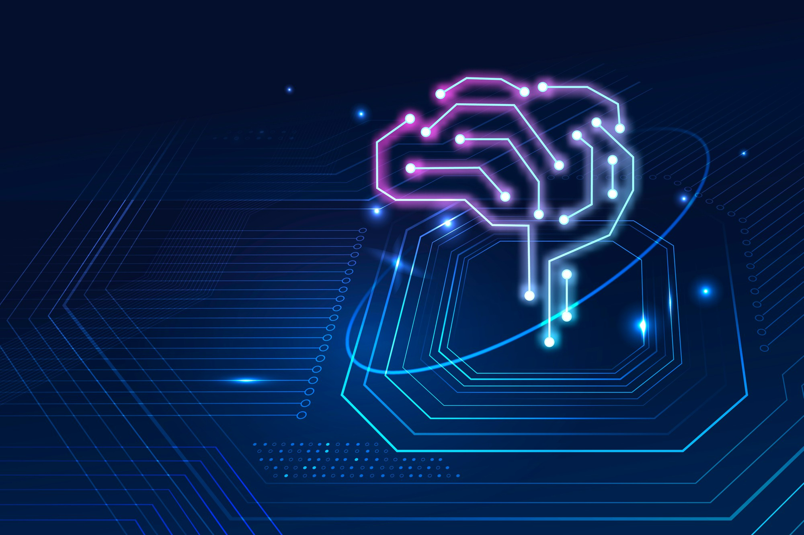

A Inteligência Artificial Geral (AGI) representa o próximo passo evolutivo na revolução tecnológica, prometendo máquinas capazes de realizar tarefas cognitivas de forma semelhante ou até mesmo superior aos seres humanos. Neste texto, exploraremos os fundamentos, desafios e implicações da Inteligência Geral Artificial, destacando seu potencial impacto em diversas áreas da sociedade.
A AGI refere-se à capacidade de uma máquina em compreender, aprender e realizar qualquer tarefa intelectual que um ser humano possa fazer. Enquanto a Inteligência Artificial convencional se concentra em tarefas específicas, como reconhecimento de voz ou imagem, a AGI busca replicar a amplitude do pensamento humano.
A base da AGI reside em algoritmos avançados de aprendizado profundo, especialmente em redes neurais profundas. Essas estruturas permitem que as máquinas processem informações de maneira hierárquica, simulando a complexidade do cérebro humano.
A capacidade de generalizar conhecimento é crucial para a AGI. Máquinas devem ser capazes de aplicar o que aprenderam em uma situação a novos contextos, adaptando-se de maneira flexível a diferentes desafios.
Um dos principais desafios é a compreensão contextual, onde as máquinas precisam interpretar informações dentro de um contexto mais amplo. Isso envolve compreender nuances linguísticas, culturais e emocionais.
À medida que as máquinas se tornam mais autônomas, a questão ética se torna crucial. Como garantir que as decisões tomadas por sistemas AGI estejam alinhadas com valores éticos e sociais?
A AGI pode revolucionar a pesquisa médica, acelerando a descoberta de novos tratamentos e personalizando cuidados de saúde com base em dados individuais.
Na educação, a AGI pode criar experiências de aprendizado personalizadas, adaptando-se ao ritmo e estilo de aprendizado de cada aluno.
A implementação da AGI levanta preocupações sobre o impacto nos empregos tradicionais. Como sociedade, precisamos explorar maneiras de mitigar as consequências negativas e adaptar-se a uma nova era tecnológica.
A transparência nos algoritmos e a responsabilidade na implementação da AGI são fundamentais. É imperativo entender como as decisões são tomadas e garantir que sejam justas e imparciais.